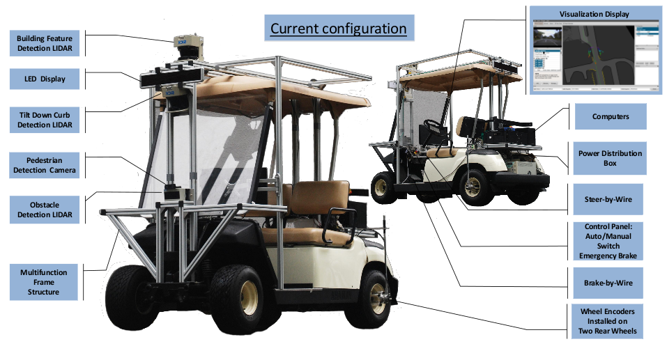
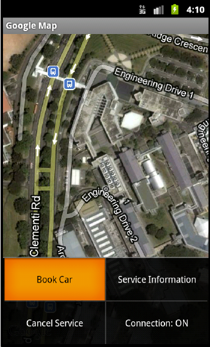
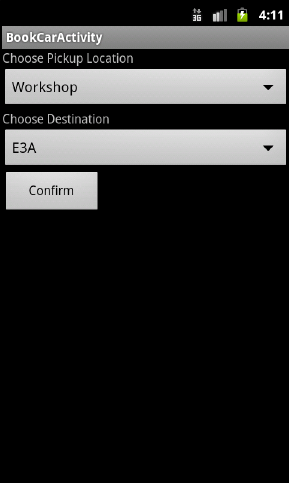
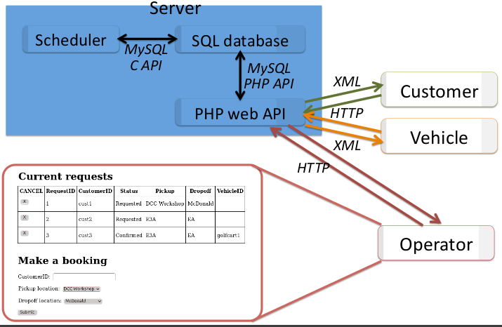

Autonomy for Mobility on Demand Systems
|  |
| Our current configuration of the autonomous mobility platform. |
Autonomous Platform
Our autonomous platform is a modified drive-by-wire Yamaha G22E golf car mounted with various sensors with a minimalistic approach in mind. It can carry two passengers including the safety driver at the maximum speed of 24 kmph.We use three 2-D LIDARs, a simple webcam to achieve required perception, two wheel encoders and a dual axis gyroscope to measure the vehicle’s speed and orientation.
The operation software is run on a on-board computers running standard linux while another low-level real-time computer runs the vehicle controller. All the software development is done using open source tools and the autonomous vehicle is running Robot Operating System (ROS).
Addressing mobility requests
|  |  |
|  |
| A demonstration of the use of the On-Demand booking system used during our operations. The inset videos show actual videos from the onboard as well as ground station videos for this particular run. The pink marker shows the actual position of the vehicle transmitted through the 3G network. |
A human operator may monitor, add, cancel and modify service requests and access the status of each vehicle through our secure web interface.

Autonomous MoD Platform
- Platform Description
- Demonstrations
- Team members
- Group website
(under construction)